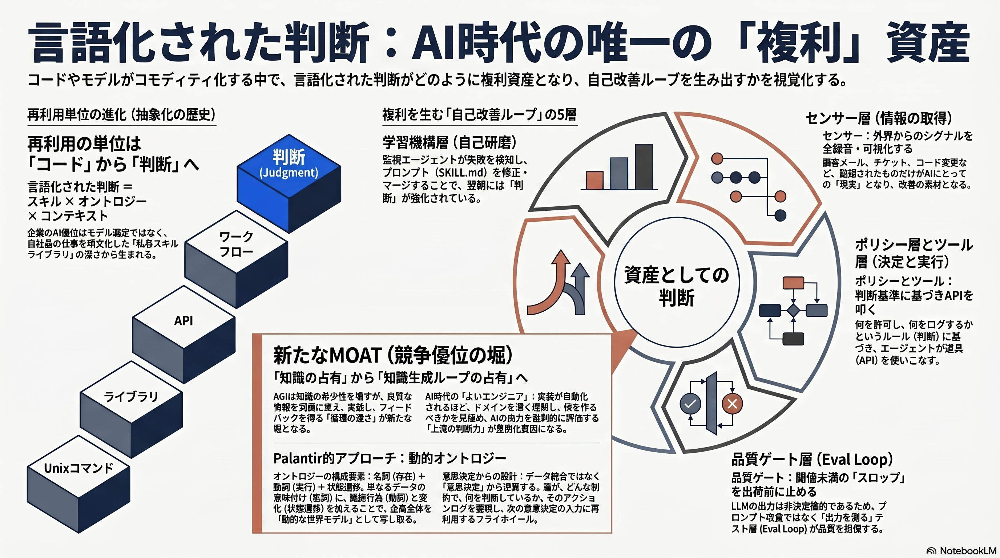

Weekly Insights: 2026-W24（2026-06-08〜06-14）
今週の中心テーマ
コードもモデルもコモディティ化した今、複利で積み上がる唯一の資産は「言語化された判断」——スキル・オントロジー・コンテキスト——であり、それは自己改善ループに配線して初めて資産になる。

先週は「どの記法でAIに渡すか（中間記法）」、先々週は「AIが働く場所」の話だった。今週はさらに一段上——何が手元に積み上がるのか（資産論）へ視点が移る。複数ページが別々の入口から同じ結論に着地している：再利用の単位が「コード→サービス→業務プロセス」を経て、ついに「判断（judgment）」まで上がった。そして判断は、書き留めて夜間も回るループに繋いだときだけ複利になる。
根拠ページ
skill-library-strategy / self-improving-company / ai-era-good-engineer / palantir-ontology
既存wikiとの接続
- self-refining-skills —
LESSONS.mdに学びを追記する自己改善はまさに「判断を書き留めてループに配線する」最小実装。今週の資産論の個人スケール版。 - claude-skills — スキル＝永続的職務定義という仕組みが、判断を「アクティブなプレイブック」として再利用可能にする土台。
- agi-knowledge-moat — 競争優位が「モデル性能」から「知識・文脈の占有」へ移るという論点。今週の根拠ページ群が共通して指す堀の正体。
sugeta-san への問い
あなたのLLM Wikiは、すでに「言語化された判断の私有ライブラリ」そのものだが、その判断は本当に自己改善ループに配線されているか？ それとも書き留めただけで止まっているか？（ingest/lint/review/gen-weekly-insights という運用スキル群と、ページ間リンクのグラフ＝個人版オントロジー）
→ evolve-insights＋LESSONS.md は配線の試み（self-refining-skills）だが、skill-self-improving-loopの「発見（会話履歴からsignal抽出）と適用（SKILL.md修正＋PR）を別スキルに分ける外部ループ型」に比べると、まだ「内蔵・人手前提」に留まる。次の一手は、失敗signalの自動抽出を retro に担わせ、適用を分離できるか。
今週の小アクション（5分）
.claude/skills/wiki-ingest/LESSONS.md を開き、直近2週間で自分が手で修正した失敗が1件でも反映されているか確認する（例: scoped-rewrite 関数が重複を隣段落へ移す、autosync 処理の競合）。反映されていない失敗が1つでもあれば、それが「判断がループに配線されていない」証拠——その場で1行追記する。
いますぐAIと一緒に（コピペ）
以下をそのまま Claude / Claude Code に貼って、自分のスキルライブラリを「判断の資産」として棚卸ししてください。
このリポの .claude/skills/ 配下のスキル（wiki-ingest, gen-weekly-insights, evolve-insights, retro など）を棚卸ししたい。次の3ステップで進めて：
1. 各スキルを wiki/concepts/skill-building-best-practices.md の「9カテゴリ」で分類し、「1スキル＝1カテゴリ」原則に照らして肥大しているスキル（複数カテゴリを跨ぐもの）を指摘する
2. wiki/business/skill-library-strategy.md の観点で、「私のwiki運用にあるのに、まだスキルとして言語化されていない暗黙の判断」を3つ挙げる（ingest時のカテゴリ判定の勘所など）
3. それぞれを「発見（signal抽出）」と「適用（SKILL.md修正）」に分離した自己改善ループに載せるとしたら、最小の次の一手は何か——wiki/concepts/skill-self-improving-loop.md の3段構成に対応づけて提案する
参照: wiki/concepts/skill-building-best-practices.md, wiki/business/skill-library-strategy.md, wiki/concepts/skill-self-improving-loop.md
さらに読むべきページ
- skill-self-improving-loop — 判断を「会話履歴→Issue→triage→PR」で自走させる外部ループの具体設計。今週テーマの「配線」側の実装図。
- skill-building-best-practices — 判断を資産化する「書き方」（9カテゴリ・gotchas蓄積・description＝トリガー定義）。Anthropic社内知見。
- eval-loop — 自己改善ループの心臓＝「生成→採点→閾値未満で止める」品質ゲートの一般形。資産が腐らず複利化するための検証層。